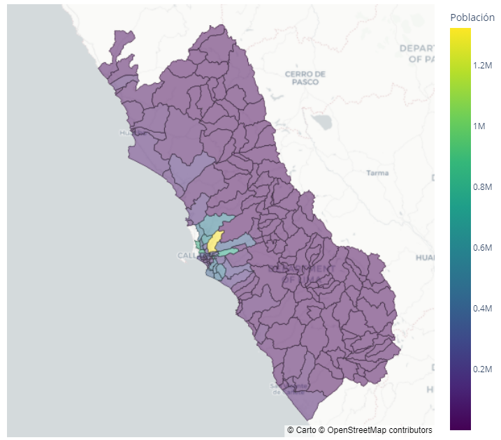

Academia de Inversión Pública
Accede a recursos, guías y bases de datos para mejorar la formulación de Proyectos de Inversión PúblicaPublicaciones y recursos destacados

Proyección demográfica: edades, distrito, provincia y departamento
Proyecciones de población por edad, distrito, provincia y departamento (2007-2040). Descarga libre de bases de datos y ...
Ir a publicaciónProyección demográfica: edades, distrito, provincia y departamento
Proyecciones de población por edad, distrito, provincia y departamento (2007-2040). Descarga libre de bases de datos y ...
Ir a publicación
Indicador de victimización a nivel distrital
Porcentaje de personas de entre 15 y 98 años en zonas urbanas que han sido víctimas de algún hecho delictivo en los últimos 12 meses..
Ir a publicación